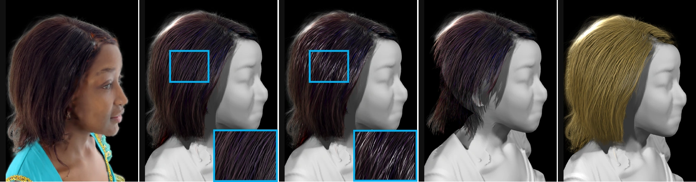
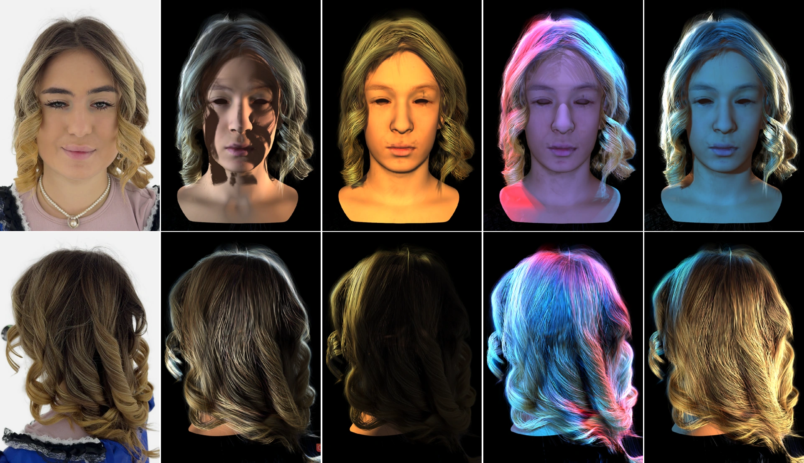

GaussianHair: Hair Modeling and Rendering with Light-aware Gaussians
Research overview
GaussianHair models individual hair strands as connected cylindrical Gaussian primitives. This representation combines explicit strand structure with efficient differentiable rendering, while a dedicated scattering model captures how hair responds to light. The recovered geometry and appearance support changes to hairstyle, illumination, and motion, linking image-based reconstruction with conventional graphics workflows.
Summary · Read original ↗01 / 03Scroll to explore ↓


